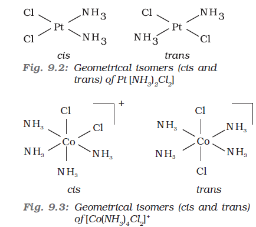
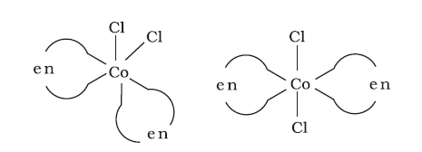
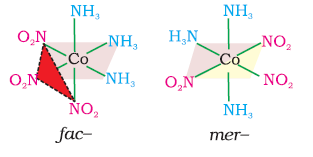
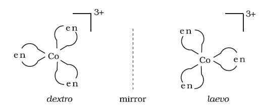
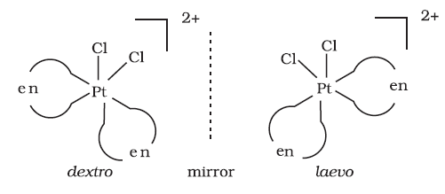
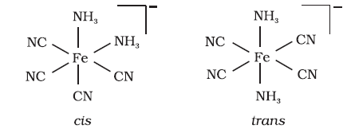
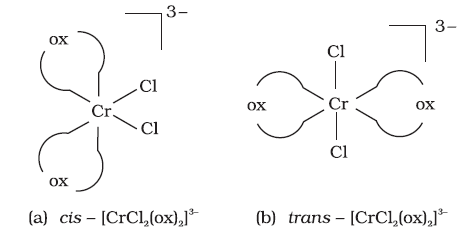

9.4 Isomerism in Coordination Compounds
Isomers are two or more compounds that have the same chemical formula but a different arrangement of atoms. Because of the different arrangement of atoms, they differ in one or more physical or chemical properties. Two principal types of isomerism are known among coordination compounds. Each of which can be further subdivided.
(a) Stereoisomerism
(i) Geometrical isomerism (ii) Optical isomerism
(b) Structural isomerism
(i) Linkage isomerism (ii) Coordination isomerism
(iii) Ionisation isomerism (iv) Solvate isomerism
Stereoisomers have the same chemical formula and chemical bonds but they have different spatial arrangement. Structural isomers have different bonds. A detailed account of these isomers are given below.

This type of isomerism arises in heteroleptic complexes due to different possible geometric arrangements of the ligands. Important examples of this behaviour are found with coordination numbers 4 and 6. In a square planar complex of formula [MX2L2] (X and L are unidentate), the two ligands X may be arranged adjacent to each other in a cis isomer, or opposite to each other in a trans isomer as depicted in Fig. 9.2.
Other square planar complex of the type MABXL (where A, B, X, L are unidentates) shows three isomers-two cis and one trans. You may attempt to draw these structures. Such isomerism is not possible for a tetrahedral geometry but similar behaviour is possible in octahedral complexes of formula [MX2L4] in which the two ligands X may be oriented cis or trans to each other (Fig. 9.3).

Fig. 9.4: Geometrical isomers (cis and trans) of [CoCl2(en)2]
This type of isomerism also arises when didentate ligands L–L [e.g., NH2 CH2 CH2 NH2 (en)] are present in complexes of formula [MX2(L–L)2] (Fig. 9.4).
Another type of geometrical isomerism occurs in octahedral coordination entities of the type [Ma3b3] like [Co(NH3)3(NO2)3]. If three donor atoms of the same ligands occupy adjacent positions at the corners of an octahedral face, we have the facial (fac) isomer. When the positions are around the meridian of the octahedron, we get the meridional (mer) isomer (Fig. 9.5).

Fig. 9.5 The facial (fac) and meridional (mer) isomers of [Co(NH3)3(NO2)3]
Example 9.4
Why is geometrical isomerism not possible in tetrahedral complexes having two different types of unidentate ligands coordinated with the central metal ion ?
Solution
Tetrahedral complexes do not show geometrical isomerism because the relative positions of the unidentate ligands attached to the central metal atom are the same with respect to each other.
9.4.2 Optical Isomerism
Optical isomers are mirror images that cannot be superimposed on one another. These are called as enantiomers. The molecules or ions that cannot be superimposed are called chiral. The two forms are called dextro (d) and laevo (l) depending upon the direction they rotate the plane of polarised light in a polarimeter (d rotates to the right, l to the left). Optical isomerism is common in octahedral complexes involving didentate ligands (Fig. 9.6).

Fig.9.6: Optical isomers (d and l) of [Co(en)3] 3+
In a coordination entity of the type [PtCl2(en)2]2+, only the cis-isomer shows optical activity (Fig. 9.7).

Fig.9.7 Optical isomers (d and l) of cis- [PtCl2(en)2]2+
Example 9.5
Draw structures of geometrical isomers of [Fe(NH3)2(CN)4]–
Solution

Example 9.6
Out of the following two coordination entities which is chiral (optically active)?
(a) cis-[CrCl2(ox)2]3– (b) trans-[CrCl2(ox)2]3–
Solution
The two entities are represented as

Out of the two, (a) cis - [CrCl2(ox)2]3- is chiral (optically active).
9.4.3 Linkage Isomerism
Linkage isomerism arises in a coordination compound containing ambidentate ligand. A simple example is provided by complexes containing the thiocyanate ligand, NCS–, which may bind through the nitrogen to give M–NCS or through sulphur to give M–SCN. Jørgensen discovered such behaviour in the complex [Co(NH3)5(NO2)]Cl2, which is obtained as the red form, in which the nitrite ligand is bound through oxygen (–ONO), and as the yellow form, in which the nitrite ligand is bound through nitrogen (–NO2).
9.4.4 Coordination Isomerism
This type of isomerism arises from the interchange of ligands between cationic and anionic entities of different metal ions present in a complex. An example is provided by [Co(NH3)6][Cr(CN)6], in which the NH3 ligands are bound to Co3+ and the CN– ligands to Cr3+. In its coordination isomer [Cr(NH3)6][Co(CN)6], the NH3 ligands are bound to Cr3+ and the CN– ligands to Co3+.
9.4.5 Ionisation Isomerism
This form of isomerism arises when the counter ion in a complex salt is itself a potential ligand and can displace a ligand which can then become the counter ion. An example is provided by the ionisation isomers [Co(NH3)5SO4]Br and [Co(NH3)5Br]SO4.
9.4.6 Solvate Isomerism
This form of isomerism is known as ‘hydrate isomerism’ in case where water is involved as a solvent. This is similar to ionisation isomerism. Solvate isomers differ by whether or not a solvent molecule is directly bonded to the metal ion or merely present as free solvent molecules in the crystal lattice. An example is provided by the aqua complex [Cr(H2O)6]Cl3 (violet) and its solvate isomer [Cr(H2O)5Cl]Cl2.H2O (grey-green).
Intext Questions
9.3 Indicate the types of isomerism exhibited by the following complexes and draw the structures for these isomers:
(i) K[Cr(H2O)2(C2O4)2 (ii) [Co(en)3]Cl3
(iii) [Co(NH3)5(NO2)](NO3)2 (iv) [Pt(NH3)(H2O)Cl2]
9.4 Give evidence that [Co(NH3)5Cl]SO4 and [Co(NH3)5SO4]Cl are ionisation isomers.